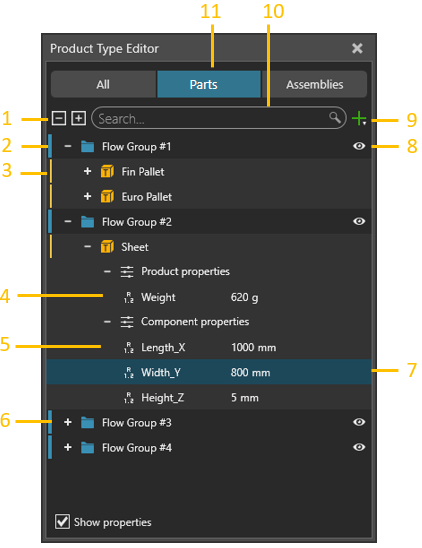
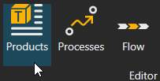
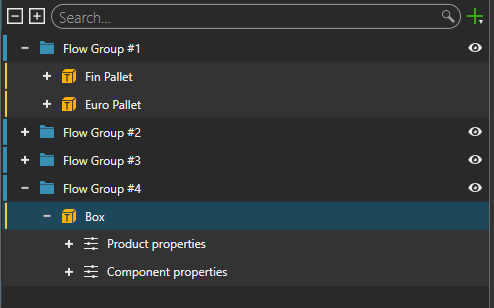
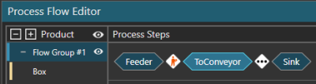
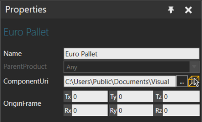
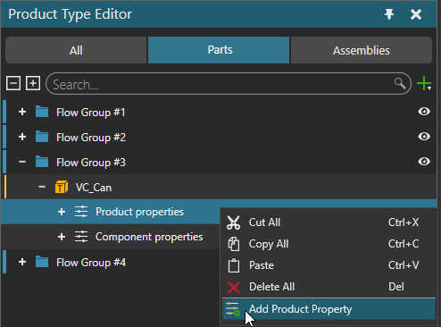
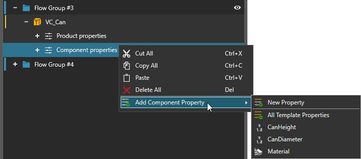
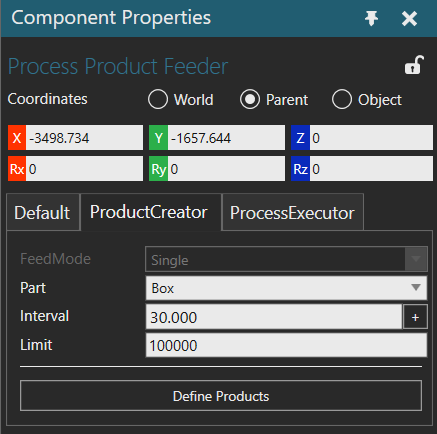
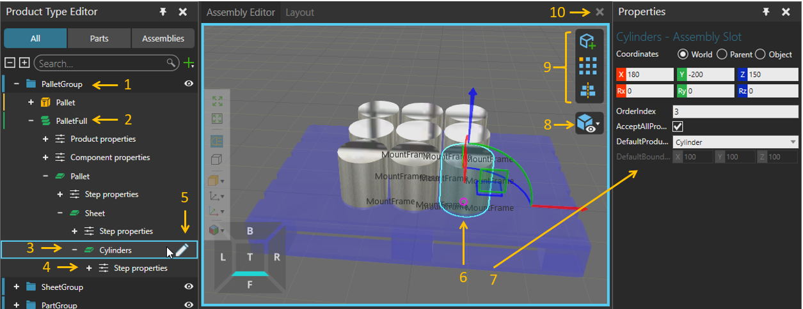

The Product Type Editor panel shows the product types and the assemblies created for the layout. The panel allows you to add and edit types and assemblies of products and arrange them to flow groups. You can also define properties for the product types and assemblies.

| 1. | Expand/Collapse Flow Groups and Product Types |
| 2. | Flow Group |
| 3. | Product Type |
| 4. | Properties of a Product |
| 5. | Properties Associated with Component |
| 6. | Collapsed Flow Groups |
| 7. | Selected Property |
| 8. | Visibility of Flow Group in Process Flow Editor Panel |
| 9. | Add Product Type or Flow Group |
| 10. | Search Box for Names of Properties, Product Types and Flow Groups |
| 11. | Select if Product Types or Assemblies are shown |
Contents ShowHide
To access the Product type editor:

Every product type belongs to a flow group. A flow group can have one or more products.

A flow group controls the flow of its products from one process to another. In all cases, products of the same flow group have the same flow. For example, different types of boxes could belong to one flow group and go through the same process steps.

A product type is the definition of what you want to manufacture in the 3D world. That is, you can make any type of product.
Product type has three kind of properties: Default, Component and Product properties. Default properties cannot be changed but their values must be defined. Component and product properties are optional and they are added manually. You can edit, copy, paste and move them between different product types and property groups.
Every product type has a default set of properties.

A product has its own set of properties. Product properties can be used to maintain the information throughout the production, while the associated component with its properties is changed due to an increase in the production phase.

A product supports the following property types:
Double (Real type number)
String (text)
Int32 (regular Integer number)
Boolean value (True or False)
Vector
Matrix
URI
Material
Custom type implemented using API
Be aware that product properties are not listed in the Properties panel of the selected dynamic component. However, they can be accessed with statements of a process routine or APIs.
A product has its own set of properties to associate with a component. You can create new properties which will be added upon creation of the product instance to the dynamic component or add properties from an associated component to define their default values.
Added / assigned upon creation of the product instance.

Be aware that a product is not a component. That is, they are two separate objects. Removing the association between a product and component does not remove the component properties of a product. In this context, think of a product type as a template for making new parts during a simulation. Associating a component with a product and adding one or more of its properties is a quick way to define or prototype a new product. Editing the properties of the component, however, have no effect on the component properties of a product.
A Product Creator is a behavior that allows a component to create product instances from product types during simulation. Thus, you can use a component having this behavior in order to create product instances in simulation defined in Product Type Editor panel. From eCatalog’s R-Pro 2.1 Public Models, you can use Source Process component as a stationary feeder or Product Feeder component as an inline feeder.

A Product Creator can create products using one of several modes.
Single creates product of a single type at a given interval.
Batch creates one or more product types in a specific order. Every entry in a batch represents a product type, its quantity, and the interval for creating the needed amount. You have the option to create a one batch or several at a given interval.
Table allows you to import an Excel file that defines which products to create at specified times
Distribution chooses product type to create based on a weighted probability.
Assemblies are hierarchical structures of Assembly Steps. Each Assembly Step represents one logical step in the product’s hierarchy that can be assembled or disassembled.
Each Assembly Step has a location compared to its parent step, and each step has its own Step properties.
Every step contains one or more Assembly Slots for the Product Types. The slot configuration is done in the Assembly Editor.
